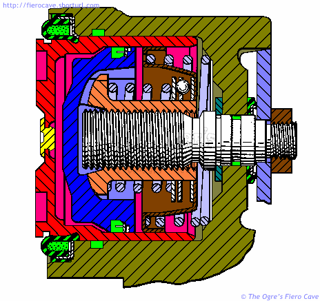
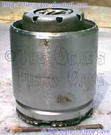
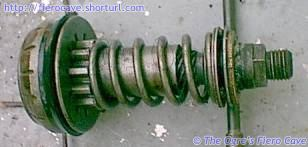
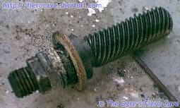
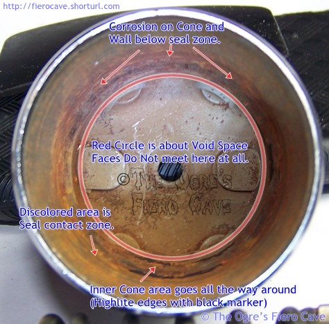
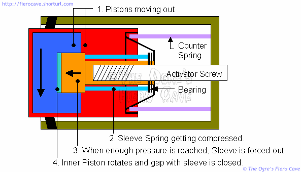

Go Home
Site Map
Go Home
Site Map
Introducing... Fiero's Rear Caliper
This page was written for 1984 to 87 Fiero. The same piston design was uses 88 but the caliper and seals are different. Do not use any parts made for 84-87 caliper to fix an 88 caliper.
Any Parts, Seals, Washers, etc, are missing?
You must replace the missing part(s) before any work is done, including fixing Parking Brake or adjusting pad clearance.
Any missing part will cause problems.
Rear Caliper Construction
The picture below shows you just how much is going on in the original style rear caliper. The original piston can be identified by the plastic "plug" in the piston face. (Original BW Image Source: US Patent 4,181,145 (PDF) Cleanup and Color by The Ogre.)

Red, Outer Piston
Yellow, Two-way Check Valve
Blue, Inner Piston
Green, Seals and Dust Boots
Olive, Caliper Shell
Note! This image is not exactly the same as an actual Fiero caliper. More on that later.
As you can see there are actually two pistons in this caliper, the blue inner piston is not indexed to the outer piston shown in red. The two are free to rotate independently.
The area between the front of the inner piston and the back of the outer piston is an air space. The Yellow plug is actually a valve that allows air to enter or exit this space as temperature changes. If fluid is leaking from this valve then the seal on the inner piston has failed. Failure of that seal means the piston must be replaced.
The air valve should be kept clean and should not be covered with grease or "squeal stop" treatments. It is OK to remove the air valve for cleaning. Do not spray cleaners into the piston. (Never use "squeal stop" adhesives on these pistons!)
Solid Face Pistons
According to posts by Bruce at FTF Engineering, solid faced (post recall) pistons are about the same as the plug faced ones.
Quoted from a Forum Thread.
Take a good look at the side of the piston just behind the dust seal. You will find the (vent) hole. All they did was make it smaller and move it from the center of the face to the radius.
IMHO that was a step in the wrong direction. It doesn't prevent the leak problem... All it does is delay your noticing it because it's hidden behind the dust seal.
The guts inside are exactly the same as the original pistons with the exception that they used a better bearing on the adjuster mechanism (new bearing has more balls than the original design and does a better job of distributing the load). Other than that, no difference...
-Bruce at FTF Engineering
I have to agree with Bruce, I'm not a big fan of hiding the vent hole. It's sort of a trade off. The hidden vent eliminates the problem of someone sealing the vent plug with squeal stop adhesive but it potentially hides a fluid leak much longer.
Fiero Rear Brakes Dissected
Warning! There is a strong spring inside the caliper and another inside the piston! Put the piston snuggly inside a large C clamp if you try this. Otherwise the back will fly off as soon as it comes loose. The caliper spring can also send things flying. Be careful when removing the piston.
There is a huge amount of confusion as to why the Fiero rear brakes refuse to adjust themselves and why it is possible to compress the piston with a clamp similar to a front piston. We'll get to both those but first...
What's in there?
Allot of people have seen the caliper and know there is a rather complicated piston inside it but few people have seen what is in the piston. So we'll start by ripping one apart. Since I don't have a way to section the parts, all I can do is show them torn down. I think most people will still understand what is going on as we go thru this.
For reference: This is an original style plug faced piston from a driver's side caliper. Passenger's side is the same but the threads and all are mirrored.
If you want to see an assembled caliper, look over at the piston compression page. I'm not going to cover every detail of the piston... Some parts are really self explained when you look at them. (Like the cap on the back, which is pressed in.)
Here's the piston about as it normally looks. (This one is already partly disassembled.)
There's not much to see here. The first groove at the bottom is where the clip goes and the other is where the dust boot goes. Under the cap you will find a bearing, a spring, the parking brake sleeve and the inner piston.
It has been thought that these pistons have a Sprag or other type of clutch in them but that isn't the case. The closest thing to a clutch is the nesting of the two pistons but they don't really serve that purpose as far as I can tell.
Our next picture is what is inside the piston. I've used the parking brake activator screw to hold it all in position for you.

From left to right (Ignore the screw driver propping the bearing.)
- The inner piston with its seal.
- The Parking Brake Activator Sleeve is inserted partly into the piston and is covered by the spring.
- It's a bit hard to see but the part that looks like three thin washers is a bearing and its races.
- The heavy washer is the thrust washer for the activator screw and it normally doesn't touch the top of the piston parts.
In normal operation, the Activator Sleeve splines are fully seated into the piston. The top of the bearing is about even with the end of the Activator Sleeve. (You can just see the top of the sleeve in the piston photo.)
Note: I've left out the big spring that lives between the piston and caliper. I believe that spring is a counter balance so that the hydraulic system doesn't see most of the load of the spring inside the piston.
Notice how steep the threads are on the activator screw. This steep thread pitch makes the screw behave more like a long cam than a traditional bolt. In fact the caliper couldn't work with a typical bolt thread here.
The activator bolt is shown here with only its thrust washer. (Also notice the corrosion shown on this bolt... It becomes a factor farther down this page.)
Here's the inside of the outer piston.
Only the cone makes contact with the inner piston. Notice the corrosion that cause most problems...

These steep threads are why the hand brake, when it works, can tighten the caliper with so little movement of the activator lever on the back of the caliper.
Now that you've seen some of what's in there and how it fits together...
How is automatic adjustment supposed to work?
According to FMVSS 571.105:
S5.1 Service brake systems. Each vehicle shall be equipped with a service brake system acting on all wheels. Wear of the service brake shall be compensated for by means of a system of automatic adjustment.
This is rule is important! It is generally accepted as meaning fully automatic and NO driver intervention should be required. All brake parts for U.S. cars are built to these rules.
Everyone Fiero is frequently told that Fiero brakes require the use of the hand brake to self adjust. The fact is this hides a defect in the brake system that is actually known to GM. (More on that later.)
The Fiero brakes are designed to automatically adjust and here is how it is supposed to work. (Keep those steep activator screw threads in mind as we go thru this.)
As I said above, there is no clutch as you would normally think of one. The whole process is a balancing act between the springs in the caliper and piston, friction, and a couple other things.
When you press the brake pedal the inner piston moves off the splines on the activator sleeve. As long as this movement is small, nothing else happens. When the movement exceeds design limits the spring forces the activator sleeve to advance down the screw. The piston rotates slightly as that happens. (For those that want to compare, I've used most of the same colors as the patent drawing on another page. The drawing is also consistent with the hardware shown. )

I believe the adjustment, if and when it happens, goes off between the time the pistons start moving and application against the brake rotor. Once the pistons start loading the pads, it's too late in that cycle to adjust.
Hand Brake Operation
It is important to remember something about the piston guts... The ONLY parts that are used when the Hand Brake is applied are:
- The Activator Lever on the back of the caliper rotates the Activator Screw.
- The Activator Sleeve translates the Screw rotation into pressure on the inner and outer pistons.
None of the other parts in the piston are used during Hand Brake application. The other parts might be affected but are not actually part of Hand Brake the process.
So why doesn't it work?
The biggest problem seems to be that the two pistons bind up and the spring cannot overcome the increased friction. You can't see it well in the pictures above but the space between the pistons had some rust dirt and wear particles in there. In the caliper used for this article, the pistons were so stuck I put over 200 pounds (My full weight) on the screwdriver I inserted in the piston hole to get the inner piston out.
Another factor is the bearing. The bearing consists of three 1mm (Approximate) balls that corrode and go bad. It was a known point of failure and upgraded in the post recall, solid faced, pistons used on manual transmission cars. However I expect that the post recall pistons still don't work much better than the original one seen here. The larger issue is still the binding pistons, not a weak bearing.
GM knows about these problems?
Problems with self-adjusting are one of the things that was supposed to be fixed by the brake recall issued for manual transmission Fiero and some other GM cars. There is also the TSB that my manual adjustment is based on.
How can the Hand Brake help?
When you use the hand brake or the manual caliper adjustment in another cave article, it helps shake the pistons loose so they can adjust. If the pistons are really bad off nothing may get them to adjust or hold adjustment. In that case the pistons have to be replaced.
You can expect that using the hand brake or the manual adjustment process will be a regular requirement with these calipers. You should try one or both of these any and every time you suffer low pedal in Fiero or other GM cars using calipers of this design.
You can't compress the piston with a clamp.
Yes you can. It has to be done as shown in another cave page, with Activator Lever removed and nothing touching the Activator Screw. As you push in the piston the Activator Screw will spin in the hole. This is possible only because of the steep threads on the Activator Screw. This method will not work on most other caliper designs.
When that method doesn't work, something is wrong. In most cases there is probably corrosion in the hole where the activator screw passes thru the caliper. The example screw above is a fairly extreme case but even small amounts of corrosion in the hole, or worse, a swollen seal in the hole will keep the piston from going in. You will also likely have other problems with the hand brake system. (You could hardly turn the example screw with the lever.)
The seal on the activator screw shaft can get swollen from oil that runs off from other problems like stuck bleeder or slide screws. Sometimes people will just spray that area with oil thinking that it will prevent problems. In either case, oil and brake parts don't mix and the seal is ruined.
If you have to work on the activator screw you will need at least a seal kit for the caliper. There is no good way to fix the screw hole without taking the whole piston out.